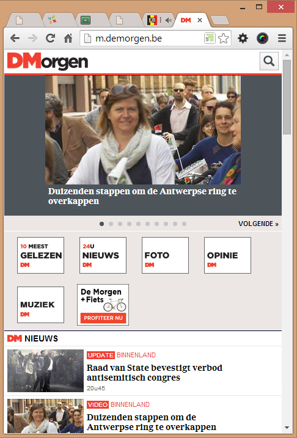

Responsive Webdesign
use the arrow keys to navigate; press space for slide overviewResponsive Webdesign
[About]
Definition
Responsive design aims at providing an optimal viewing experience across a wide range of screen resolutions and devices with a single site, codebase and content.
How is mobile doing? (1)
- In 2014, mobile traffic was expected to surpass desktop traffic:


How is mobile doing? (2)
-
Observations:
- mobile seems to stabilize or even have reached its peak (worldwide; other charts for Europe, Africa, Asia, North-America and Belgium)
- developing countries are more developed mobilewise
- is the tablet hype over?
{kind=link}
{kind=link}
{kind=link}
{kind=link}
{kind=link}

How is mobile doing? (3)
- Still, mobile usage hovers around 40%
- Also for e-commerce it is big business:

Responsive webdesign (1)
- Responsive webdesign = a single site that adjusts ('responds') optimally to every screen width

- today every site
Responsive webdesign (2)
-
Transition effects on elements (textboxes, graphics, fonts...) between screen sizes is called content choreography:
- stretching / compressing elements → flexibility
- reordering elements → fluidity
- omitting / adding elements
- changing elements
- ...
- Basically whatever floats your boat
Responsive ≠ mobile only! (1)
- Optimized for all screen sizes means optimized for all screen sizes, not for mobile only
- A hamburger menu on a 1920x1080 screen is ridiculous:
Responsive ≠ mobile only! (2)
- Stretching your content 1920px wide is ridiculous too:
Alternative: an app (1)

Alternative: an app (2)
-
Apps are great!
- easy to download and install
- work well offline
- have direct hardware access (GPS, camera, accelerometer...)
- have good visibility in app stores
-
But for a regular websites building an app is quite silly:
- seperate versions needed for Android, iOS, Windows...
- hard and expensive to develop and maintain
- customers simply do not download and install websites
Alternative: mobile version (1)

Alternative: mobile version (2)
-
A separate mobile version: sounds like a plan!
- optimized design and content
- bandwidth-friendly
- take advantage of mobile features like geolocation, QR-scanning etc...
-
But maybe the idea is not so great after all:
- different links: which one should you share with others?
- developing and maintaining two separate versions is costly
- design: still optimized for just two versions... what about tablets? large smartphones? netbooks?
- bandwidth: should a smartphone on Wifi use the light mobile or the full desktop version? and a tablet on 3G?
- mobile: is a smartphone at home considered 'mobile' or 'desktop'? what about a laptop in a public area?
Responsive Webdesign
Responsive in 7 easy steps
Responsive in 7 Steps
-
First prepare your code:
- step 1: make sure you've used em/rem as your default unit
- step 2: add the viewport meta tag
- step 3: make your layout (wrapper, columns, images, boxes...) flexible
-
Then make your site responsive:
- step 4: choose your breakpoints
- step 5: add a media query for each breakpoint
- step 6: make your CSS responsive — move/change CSS inside and outside the media queries until it looks good on all screen widths
- step 7: repeat until satisfied
Step 1: em/rem
-
Make sure you've used
remoremas your default unit, like we've done throughout the course: -
/* set default font size to 16px * 0.625 = 10px */ html { font-size: 0.625em; } /* from now on 10px = 1rem */ body { font-size: 1.3rem; /* 13px, or whatever default font size you like */ } .wrapper { max-width: 96rem; /* 960px */ padding: 0 2rem; /* 0 20px */ } ... - should normally already be ok
Step 2: viewport metatag
-
Let your mobile device know that your site is responsive; otherwise it will try and rescale the whole page to squeeze it in the device screen. This is simply done by adding the viewport metatag to your HTML:
<head> ... <meta name="viewport" content="width=device-width, initial-scale=1.0"> ... </head> -
You'll also come across this version, but it does not allow the user to zoom in:
<meta name="viewport" content="width=device-width, minimum-scale=1.0, maximum-scale=1.0">
Step 3: flexible layout
-
Make sure your layout is flexible, i.e. it can squeeze or expand with device width. Basic principles:
- layout: use flexbox and/or float — don't use absolute positioning
- wrappers: use
min-widthandmax-width, notwidth - flexible columns: use % (percentage) — don't use fixed size units
- flexible rows (e.g. header): don't use
height - flexible boxes and images: use
width:100%andmax-width— don't use fixed widths
Step 3: flexible layout (A)
- replace any absolute positioning layout you may have used by flexbox or by float layout, e.g.:
header #logo {position: absolute;top: 2rem;left: 1rem;margin-top: 2rem; margin-left: 1rem; float: left; } header #login {position: absolute;top: 2rem;rigt: 1rem;margin-top: 2rem; margin-right: 1rem; float: right; } - should normally already be ok
Step 3: flexible layout (B)
-
define
min-widthandmax-widthfor wrappers instead ofwidth:.wrapper {width: 96rem;max-width: 96rem; min-width: 32rem; }
Step 3: flexible layout (C)
- use
%for flexible columns — usecalc()if needed:.leftcol {width: 64rem;width: 67%; } .rightcol {width: 28rem;margin-left: 4rem; width: calc (33% - 4rem); } - other combinations are possible, e.g. 66% + 4% + 30%, or calc(67% - 2rem) + 4rem + calc(33% - 2rem); just make sure the sum is 100%
Step 3: flexible layout (D)
- remove
heightfrom vertically flexible parts, e.g. the header, as it will need to stretch for smaller screen sizes when child components shift:header {height: 25rem;}
Step 3: flexible layout (E)
- images and other flexible boxes with a maximum width should both have
widthandmax-widthset:main img { width: 45rem; /* native width */ max-width: 100%; /* should not be wider than its parent */ }
step 4: decide breakpoints
-
A breakpoint is the browser width where the CSS transition between large and small version will occur. Deciding on a breakpoint is easy:
- open your page in the browser
- make your browser window smaller (it should already be flexible)
- the width where your design breaks is your breakpoint
- There are no 'recommended' breakpoints; pick whatever fits your design.

step 5: add media queries (1)
-
Suppose you want breakpoints at 600px, 800px and 1000px. Start with the CSS for the smallest screens, and work your way up for larger screen widths with media queries:
/* CSS for smallest screens */ ... /* =============== Media queries =============== */ @media (min-width: 37.5em) { /* 37.5 * 16 = 600px */ /* additional CSS for screens 600px and up */ ... } @media (min-width: 50em) { /* 50 * 16 = 800px */ /* additional CSS for screens 800px and up */ ... } @media (min-width: 62.5em) { /* 62.5 * 16 = 1000px */ /* additional CSS for screens 1000px and up */ ... } - always put your media queries at the bottom of your CSS
- sort your breakpoints from small to large
-
only use
min-width, notmax-widthor a combination
The general philosopy for responsive CSS is "mobile first", i.e. create your CSS for the smallest screen, and adapt with media queries for larger screens. The alternative, "desktop first", would require you to create CSS for the largest screen, and then adapt it for smaller screens. As the CSS for larger screens is usually more complex than for smaller screens, it is better to start from the smalllest possible CSS and work your way up. This will lead to less complex CSS.
Also, note that the breakpoint is defined in em instead of rem. Media queries have no 'root' and thus no rem. Simply devide your breakpoint in px by 16, e.g. 800px / 16px = 50em
step 6 & 7: responsive CSS
- The rest is basically just shuffling CSS back and forth between media queries and adding new CSS until it looks good on all devices.
- For a full example check the step by step demo in next part
Final note: responsive images
-
Resizing large images into small screens isn't bandwidth friendly; a W3C group has worked out a solution with
<picture>:<picture alt="A giant stone face at The Bayon temple in Cambodia"> <source src="small.jpg"> <source src="medium.jpg" media="(min-width: 400px)"> <source src="large.jpg" media="(min-width: 800px)"> </picture> - browser support is really good
Responsive Webdesign
Step by step demo
Startcode
- The following layout is px based and has a fixed layout:
-
See the Pen CSS course 04 demo1 by Rogier van der Linde (@rogiervanderlinde) on CodePen.
Step 1: em/rem based
- With all px values (except some 1px borders) translated to rem:
-
See the Pen CSS course 04 demo1 by Rogier van der Linde (@rogiervanderlinde) on CodePen.
Step 2: flexible
-
Changes:
- wrapper: used
max-widthandmin-widthinstead ofwidth - header:
heightremoved, replaced bypadding-bottom - left menu and content: absolute widths replaced by percentages
- content picture and comments:
widthchanged to 100%,max-widthset
- wrapper: used
-
See the Pen CSS Course 04 demo3 by Rogier van der Linde (@rogiervanderlinde) on CodePen.
Step 3: responsive
-
Changes:
- media queries added for 480px (30em) and 600px (37.5em)
- CSS for header layout and aside float moved to first media query
- CSS for main column layout moved to last media query
-
See the Pen CSS Course 04 demo4 by Rogier van der Linde (@rogiervanderlinde) on CodePen.